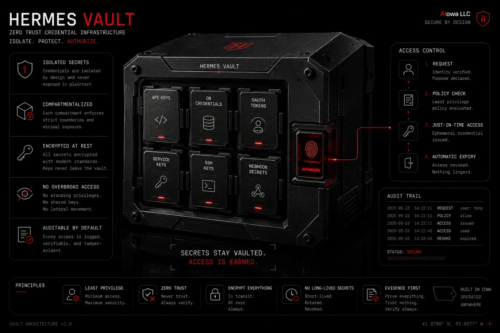
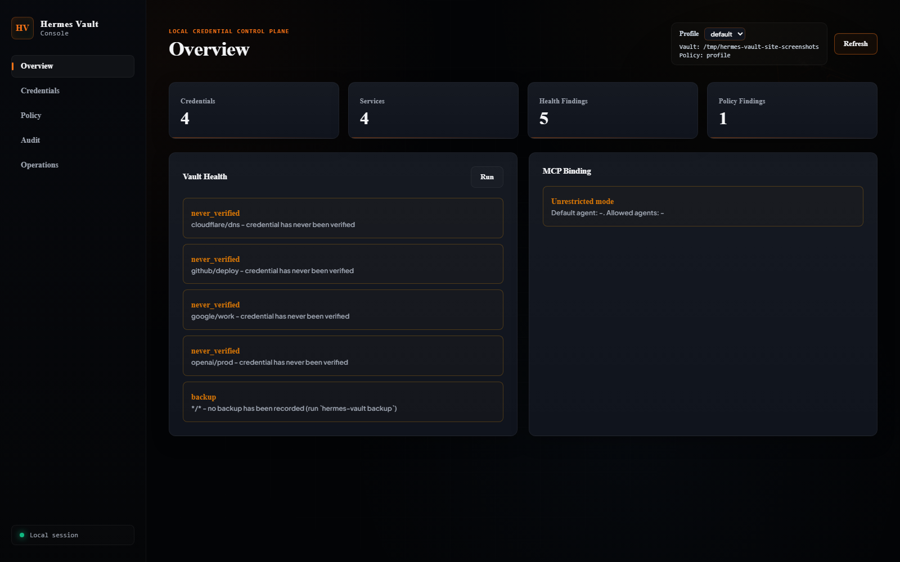
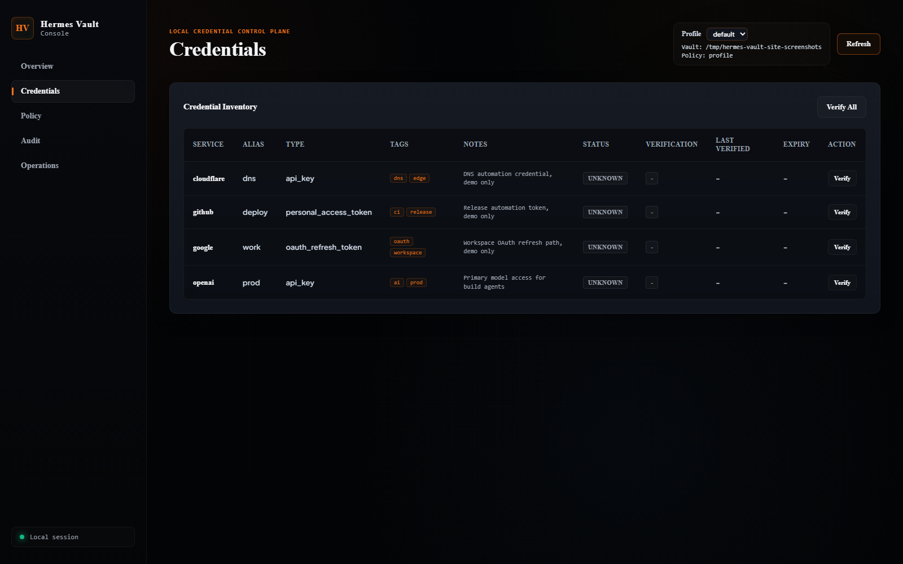
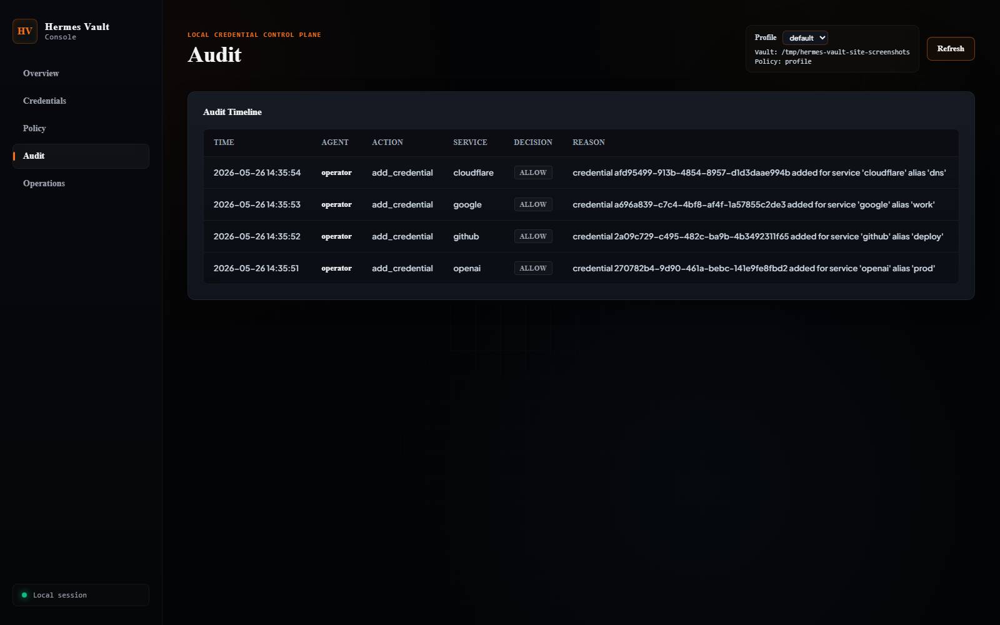

First Safe Agent bootstrap
bootstrap previews env imports, imports approved credentials, summarizes policy posture, and prints next commands without exposing secret values.
v0.26.0 • Feature • Trustworthy under failure: safe recovery, doctor, auth enforcement, crypto v2
Bootstrap a messy plaintext env file into an encrypted local vault, explain every access decision, route approvals through an audit trail, bind env handoffs to leases, and prove recovery before the incident. Less key sprawl, fewer auth lies, fewer agent mistakes.
uv tool install git+https://github.com/asimons81/hermes-vault.git@v0.26.0
hermes-vault doctor, lease ownership + expiry enforcement, a truthful CLI (--version, honest exit codes), MCP resource correctness, crypto v2 write-default with opt-in migrate-crypto, and CI release integrity. View release
HERMES_VAULT_HOME variable.

First Safe Agent Flow
Preview a plaintext env file, import only the approved entries, generate the agent contract, and broker short-lived access without dumping raw secrets into the agent context.
Autonomous agent requests env variables via the get_ephemeral_env tool.
Vault verifies the calling agent ID against permissions in policy.yaml.
Key is safely materialized in agent environment for a TTL-bounded duration.
Idle
Agent hermes is authorized to perform get_env on openai under explicit operator rule matching policy.yaml.
agents:
hermes:
capabilities: [read, verify, rotate]
services:
openai: [get_env, verify]
github: [get_env, verify]
"*": [verify]What it does
Hermes Vault now gives operators a single onboarding rail: redacted env preview, encrypted local storage, policy doctor checks, skill contract generation, and MCP tools that keep raw secrets out of the chat loop.
bootstrap previews env imports, imports approved credentials, summarizes policy posture, and prints next commands without exposing secret values.
NDJSON bridge, FastAPI adapter, and native Desktop plugin with opt-in audited add, rotate, and delete mutation dialogs.
39 built-in verifier configs covering 45 canonical services, health score (A–F), setup wizard, and CSV import/export filtering.
Ed25519 audit integrity chains, authenticated checkpoints, transactional restore, and hvbackup-v2 evidence verification.
policy doctor checks policy.yaml rules for agent capabilities, policy drift, and wildcard credential access.
In-loop agent tools like get_ephemeral_env alongside startup materialization using explicit hv:// references.
Reality check
No cloud sync. No central server audits. Destructive vault actions, raw key updates, and policy edits are locked to the local CLI, keeping browser dashboards strictly read-only and metadata-focused.
Allows absolute vault database and policy configuration separation using the --profile argument.
The console dashboard binds to 127.0.0.1 and generates a process-local token required for all API calls.
Verify backup age, check backups, and run non-mutating restore drills using the backup-verify utility.
Console Dashboard
The redesigned local console renders health statistics, onboarding previews, credential inventory, policy posture, recovery drills, leases, and audit activity on localhost, keeping raw key payloads fully redacted.



The published screenshot set below reflects the local console baseline and preserves the local-only, token-guarded boundary across the v0.26.0 release line.
Hermes Secret Source plugin
Hermes Vault now materializes explicit hv:// refs at startup. MCP remains the in-loop agent control plane, while Secret Source is only for bootstrap credentials.
Use ENV_VAR=hv://service or ENV_VAR=hv://service?alias=name. No bulk export, no refresh, no write-back.
The plugin shells out through Hermes run_secret_cli() to hermes-vault secret-source fetch with stdin closed.
HERMES_VAULT_PASSPHRASE stays available to startup, empty secrets are omitted, and partial successes stay warnings.
secrets:
sources: [hermes_vault]
hermes_vault:
enabled: true
binary: hermes-vault
agent: hermes
ttl_seconds: 900
timeout_seconds: 30
home: ~/.hermes/hermes-vault-data
policy: ~/.hermes/hermes-vault-data/policy.yaml
env:
OPENAI_API_KEY: hv://openai
GITHUB_TOKEN: hv://github?alias=workMove mapped startup credentials out of ~/.hermes/.env and into the plugin config. Leave only bootstrap vars like the passphrase in the startup environment.
The first Hermes process that installs or discovers the plugin may not use it until the next Hermes process starts because plugin discovery happens after startup env loading.
Non-interactive fetch, protected bootstrap passphrase, no empty overrides, no bulk export, and redacted errors on partial or denied startup attempts.
Operator installation
Hermes Vault requires Python 3.11+. Install it, bootstrap your first env file, then let agents request scoped access through policy and recovery checks.
uv tool install git+https://github.com/asimons81/hermes-vault.git@v0.26.0
hermes-vault setup
hermes-vault bootstrap --from-env .env --agent hermes --dry-run
hermes-vault health
hermes-vault audit-verify
hermes-vault policy explain hermes openai --action get_envInstalls the CLI inside an isolated tool context and starts with a non-mutating bootstrap preview on the latest release.
The bootstrap report is redacted, policy-aware, and explicit about skipped env names and next steps.
git clone https://github.com/asimons81/hermes-vault.git
cd hermes-vault
uv sync --extra dev
uv run pytest tests/ -qCreates a synchronized editable environment with developer hooks and unit tests configured.
Never write real passphrases, databases, or provider token payloads into logs or test assets.
Release & status history
Hermes Vault has an active release trail. The local changelog tracks security fixes, command line updates, dashboard improvements, and recovery proof.
Patch: false ✗ Integrity stat fix (derive from /integrity, not overview.health), completed Windows safety for the plugin adapter (reader mechanism from v0.25.0; adds the HOMEDRIVE/HOMEPATH launcher keys + regression tests), MCP SDK constraint raised to >=2.0.0,<3.0.0 for mcp 2.x, flaky-test hardening (#82/#83), README hero swap, and the site's Studio branding with the hero webp now tracked in git.
Desktop Mutation Surface: opt-in bridge add/rotate/delete methods, FastAPI adapter mutation routes, native Desktop dialogs with type-to-confirm delete, fail-closed audit protection, and React same-mount state fixes.
Hermes Desktop Integration: versioned NDJSON desktop-bridge CLI entry point, FastAPI plugin adapter, and native Desktop runtime page for read-only metadata, audit, and integrity.
Patch: audit chain wedge fix across six CLI write paths and fail-closed secret export handling.
Patch: capped MCP SDK dependency below 2.0.0 for import compatibility.
Maintenance & Docs: PYTHONPATH pollution guard in test collection and release readiness records.
Vault Intelligence: 39 shipped YAML verifiers covering 45 canonical services, health score (A–F), setup wizard, CSV import/export, and tag management CLI.
Audit Assurance: signed audit continuity with authenticated checkpoints, HKDF-derived Ed25519 chains, legacy anchoring, hvbackup-v2 with integrity evidence, and transactional restore.
Hermes Secret Source Plugin: mapped startup env materialization, protected bootstrap passphrases, non-interactive fetches, redacted errors, and MCP kept for in-loop access.
Agent Access Control Plane: policy explain, lease-enforced handoffs, access request workflow, agent context manifests, and recovery drills.
Operator Workflow Convergence with dry-run dashboard onboarding preview, recovery diff drills, searchable credential/lease/audit views, MCP vault://status, and fixes for lease metrics, key validation, and OAuth login state isolation.
Lease Assurance with health visibility, scheduled cleanup, policy drift detection, backup lease diffing, and full lease lifecycle coverage.
Agent Access Lifecycle with lease issue/renew/revoke workflows, policy pack templates, and dashboard/MCP surfacing for access metadata.
EvoLink provider support with canonical service ID mapping and provider-specific verification.
Agent OAuth freshness: broker auto-refreshes near-expiry OAuth tokens before env handoff. OAuth refresh metadata, 30s refresh cooldown, and policy-gated via the rotate service action.
Native Windows support with HERMES_VAULT_DPAPI=1 master-key wrapping, a new _platform.py abstraction layer, and full docs/windows.md install, OAuth, backup, and Task Scheduler guides.
Credential lifecycle and recovery with maintain, policy doctor, backup-verify, and restore --dry-run.
OAuth readiness with oauth doctor, live health --verify-live, and MCP oauth_provider_status.
First Safe Agent bootstrap, oauth login --headless, and MCP device-login parity.
Explicit OAuth device-code login for headless shell sessions.
Unattended OAuth auto-refresh engines and generic custom verifiers.
Multi-vault profile support, file-based verifier plugins, tags and notes.
Hermes Vault Console local browser dashboard with safe action boundaries.
Policy doctor auditing tool, backup-verify drills, and Systemd integration helpers.